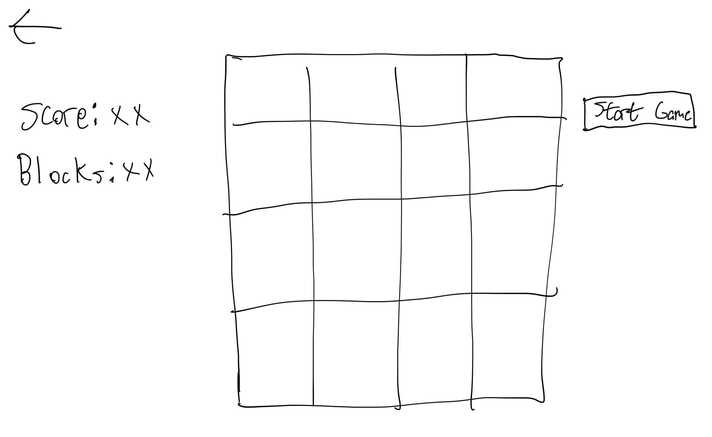
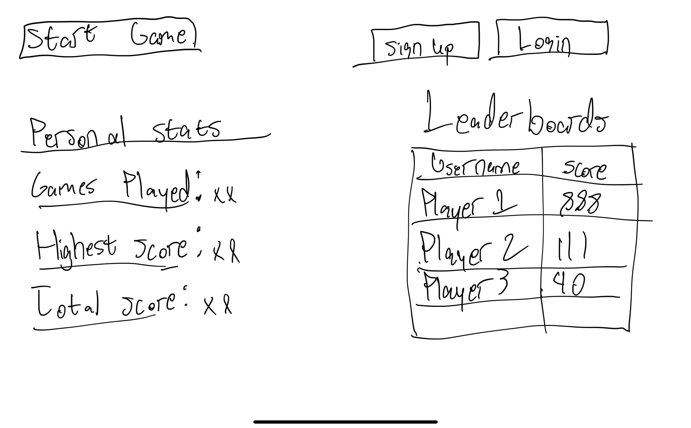

FP0 Writeup
For my final project, I plan on building an online Tetris game where players could create an account and view statistics pertaining to the tetris games they have played. I've listed the features below based on the order I will be implementing them.
Prototype Version
1. Rotating Tetris Blocks
The last feature core feature of Tetris that my game lacks so far are controls for allowing blocks to rotate. Currently, the pattern for which I generate blocks is completely random. I plan to change this to instead create a data type to store information about all the different possible block combinations I want my Tetris game to choose, and then when I generate new blocks I will randomly choose one of these combinations. I'm planning to do this because if there are only a small number of block combinations that can be generated, it will be fairly easy to make a function to handle rotating for these specific block combinations.
2. Improved Tetris UI
Currently, my tetris UI is very barebones. I plan to improve it by centering the tetris grid, and also by having information about the score of the current game that's being played. I'm also planning on doing some digital mockups on Figma to brainstorm different ways to make this visually appealing
Final Version
3. Firebase Authentication
For persistent storage of user login information and also player statistics, I plan on leveraging Firebase to allow for user authentication.
4. Leaderboards & Statistics Page
I'm planning on creating a page to allow users to view statistics about the games they've played, and also for a leaderboard to rank the top users for certain categories. This page would also include buttons for starting a tetris game, signing up, and logging in.
Sketches
 Unknowns
The main unknown for me is Firebase authentication, so I will need to spend time reading the documentation and figuring how it works. I have pretty extensive knowledge of query languages + DBMSs so hopefully it should be easy to figure out how to store + query user information.
Stretch Goals
Making a really nice statistics page with good CSS would probably be the main stretch goal.